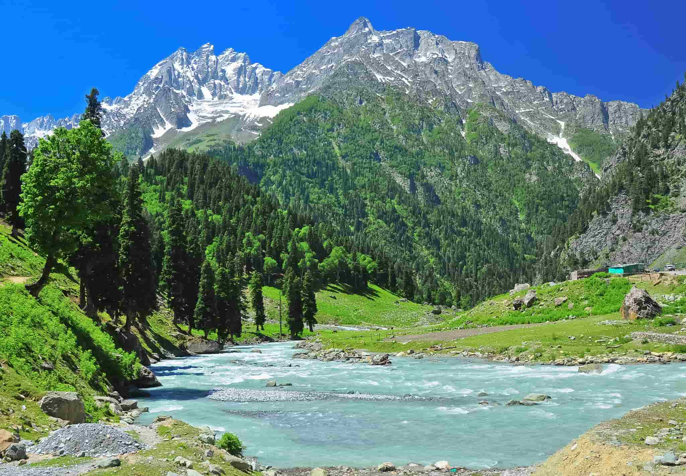

Favorite Travel Destination
| Name | Country | Best Time To Visit |
|---|---|---|
| Kashmir | India | March to October |
| Ladakh | India | May to September |
| New York | USA | April to June (Spring) & September to November (Fall) |
| Dubai | UAE | November to March |
| Kerala | India | September to March |
All 5 Places
Kashmir, India:
Ladakh, India:

New York, USA:

Dubai, UAE:
Kerala, India: